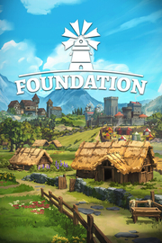

Foundation
Detalles
|  | |
| Tiempo de juego | No Jugado |
| Última actividad | Nunca |
| Añadido | 3/7/2025 1:49:43 |
| Modificado | 3/7/2025 2:23:46 |
| Estado de finalización | Not Played |
| Librería | Playnite |
| Fuente | 2TB GAS |
| Plataforma | PC (Windows) |
| Fecha de lanzamiento | |
| Puntuación de la Comunidad | 84 |
| Puntuación de la Crítica | |
| Puntuación de usuario | |
| Género | Estrategia Indie Simuladores |
| Desarrollador | Polymorph Games |
| Editor | Polymorph Games |
| Característica | Cloud Saves Logros De Préstamo Familiar Un Jugador |
| Enlaces | Punto de encuentro Discusiones Guías Noticias Página de la tienda PCGamingWiki Logros |
| Tag | Acceso anticipado Ambientales Construcción Construcción de bases Construcción de ciudades Economía Estrategia ETR Gestión Gestión de recursos Indie Las elecciones importan Medievales Mundo abierto Relajantes Sandbox Simulación Simulador de colonias Supervivencia Un jugador |
Descripción
Foundation es un juego de construcción de ciudades medievales sin cuadrículas, en el que crearás edificaciones modulares, darás forma a ciudades que crecerán de forma natural y organizarás la vida de los habitantes.

CONSTRUYE LA CIUDAD MEDIEVAL DE TUS SUEÑOS Y OBSÉRVALA CRECER DE FORMA NATURAL
Foundation combina herramientas de construcción libre y generación procedimental para crear la mejor experiencia de construcción de ciudades que se desarrollan de forma natural.

GESTIONA TU VILLA Y HAZ QUE COBRE VIDA
Asigna oficios, crea cadenas de producción y establece el comercio. En Foundation, ¡tus creaciones cobrarán vida!

JUEGA A TU RITMO, RELÁJATE Y DISFRUTA LAS VISTAS
Foundation te ofrece una amplia variedad de niveles de dificultad para que juegues como quieras. Puedes elegir una aspiración y explorar nuevos estilos de juego, o relajarte y disfrutar del escenario con el modo Creativo.
CONSTRUYE LA CIUDAD MEDIEVAL DE TUS SUEÑOS Y OBSÉRVALA CRECER DE FORMA NATURAL
Foundation combina herramientas de construcción libre y generación procedimental para crear la mejor experiencia de construcción de ciudades que se desarrollan de forma natural.
GESTIONA TU VILLA Y HAZ QUE COBRE VIDA
Asigna oficios, crea cadenas de producción y establece el comercio. En Foundation, ¡tus creaciones cobrarán vida!
JUEGA A TU RITMO, RELÁJATE Y DISFRUTA LAS VISTAS
Foundation te ofrece una amplia variedad de niveles de dificultad para que juegues como quieras. Puedes elegir una aspiración y explorar nuevos estilos de juego, o relajarte y disfrutar del escenario con el modo Creativo.
CARACTERÍSTICAS
- Una experiencia avanzada de construcción de ciudades sin cuadrículas, con generación de mapas ilimitada y un sistema de construcción prácticamente sin restricciones.
- Herramienta de construcción libre: crea edificaciones modulares a partir de piezas individuales, embellécelas y transfórmalas en majestuosos monumentos.
- Desarrollo orgánico con nuestra exclusiva herramienta de pintado: guía a tus habitantes definiendo zonas residenciales, decide dónde pavimentar caminos y establecer patrullas, designa zonas de extracción forestal y mucho más.
- Administra tu villa: desarrolla cadenas de producción, cobra impuestos a tus habitantes, comercia con las poblaciones cercanas o lucha en nombre del rey. ¡Hay muchas formas de crear una economía próspera!
- Avanza a lo largo de tres rutas distintas, una por cada estamento: el Pueblo, el Clero y el Reino. Puedes especializarte en uno o combinar los tres.
- Personaliza la experiencia de juego a tu medida: elige una aspiración, ajusta el nivel de dificultad a tu antojo o construye sin limitaciones en el modo Creativo.
- ¡Integración completa de mods!
- Banda sonora original de Foundation: sumérgete en más de 100 minutos de música ambiental medieval, creada por los galardonados compositores de Audinity.
- ¡Y mucho más!